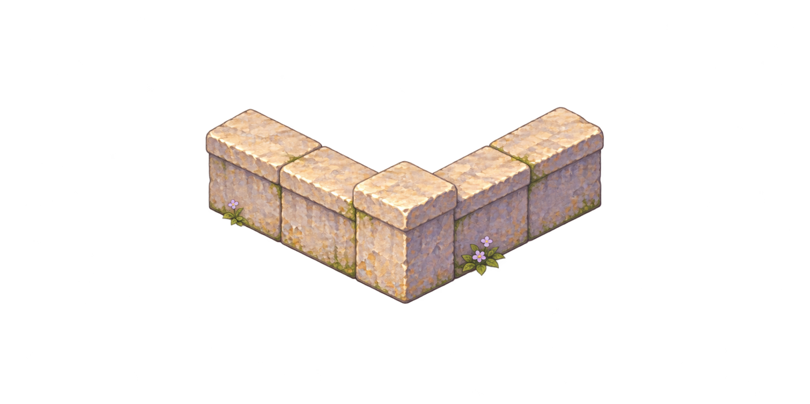
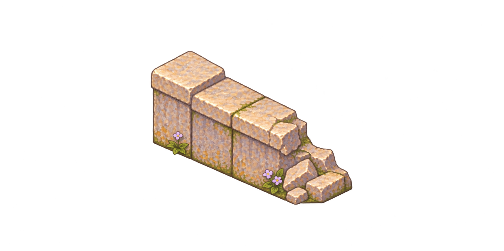
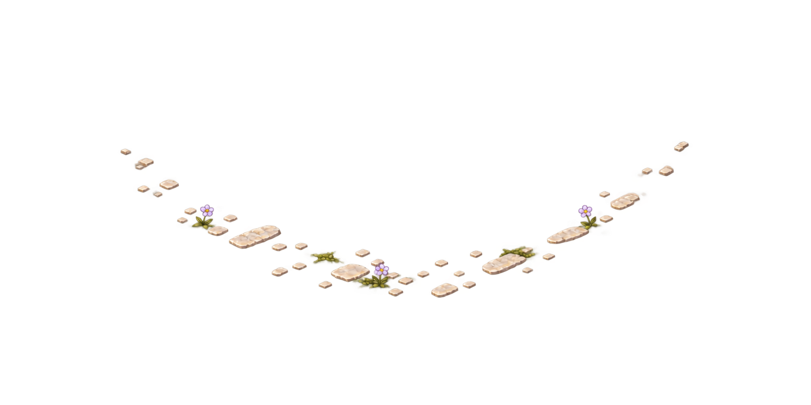

Low-wall corner

Original PNGs rendered with their alpha. These are visual candidates, not accepted runtime assets. Small previews use the same 0.1 image scale, not a solved gameplay registration. Toggle backgrounds to see real edges rather than hidden RGB in transparent pixels.



No live game files were changed. A fixed-camera cutout does not solve rotating-stage views. Approval, seam/assembly testing, actual-game readability and gameplay occupancy are still required.